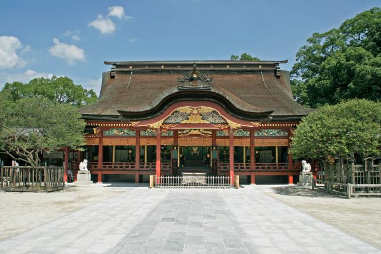
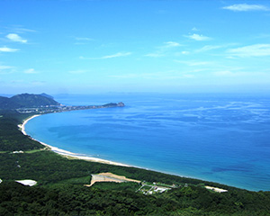
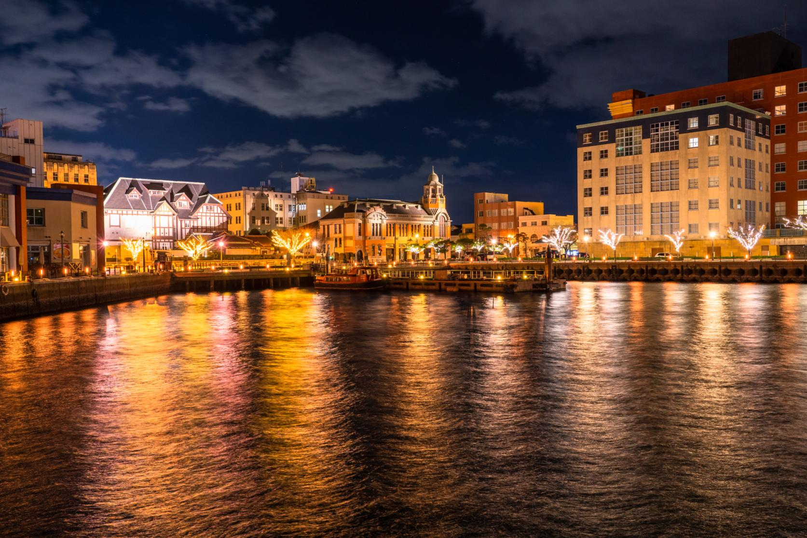
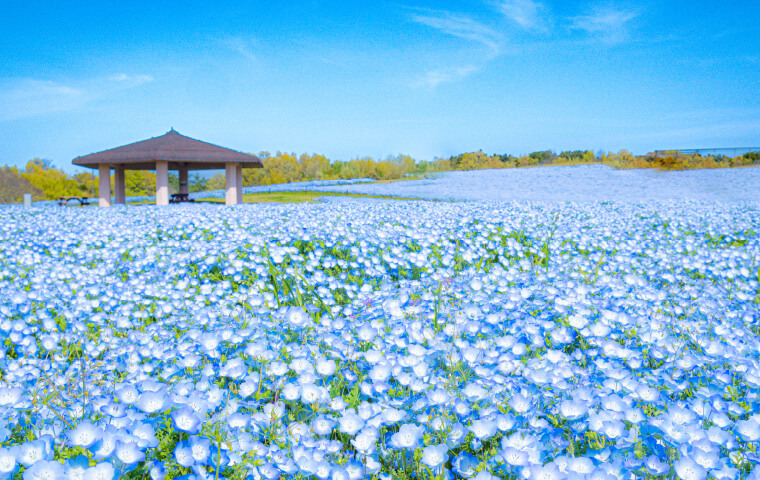

大宰府天満宮
菅原道真公がまつられている神社。お正月は特に観光客が訪れ、たくさんの人でにぎわう。
糸島
ヤシの木ブランコが有名。インスタ映えにも！
門司港レトロ
夏になると関門海峡では花火があがり、たくさんの屋台が出る。
海の中道海浜公園
四季折々の花が楽しめ、特に春に咲く青いネモフィラの花畑が美しい。
菅原道真公がまつられている神社。お正月は特に観光客が訪れ、たくさんの人でにぎわう。
ヤシの木ブランコが有名。インスタ映えにも！
夏になると関門海峡では花火があがり、たくさんの屋台が出る。
四季折々の花が楽しめ、特に春に咲く青いネモフィラの花畑が美しい。